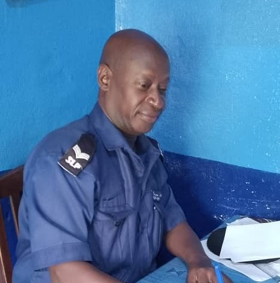
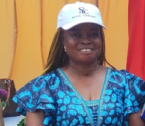
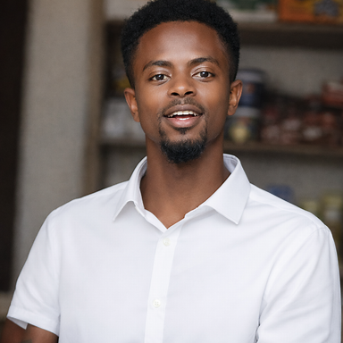
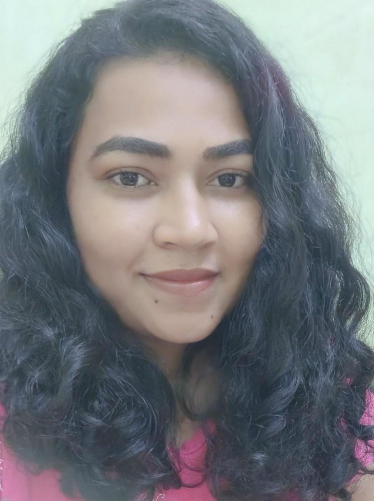
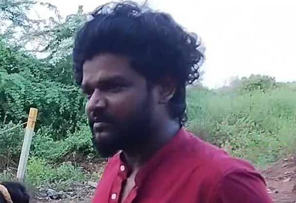
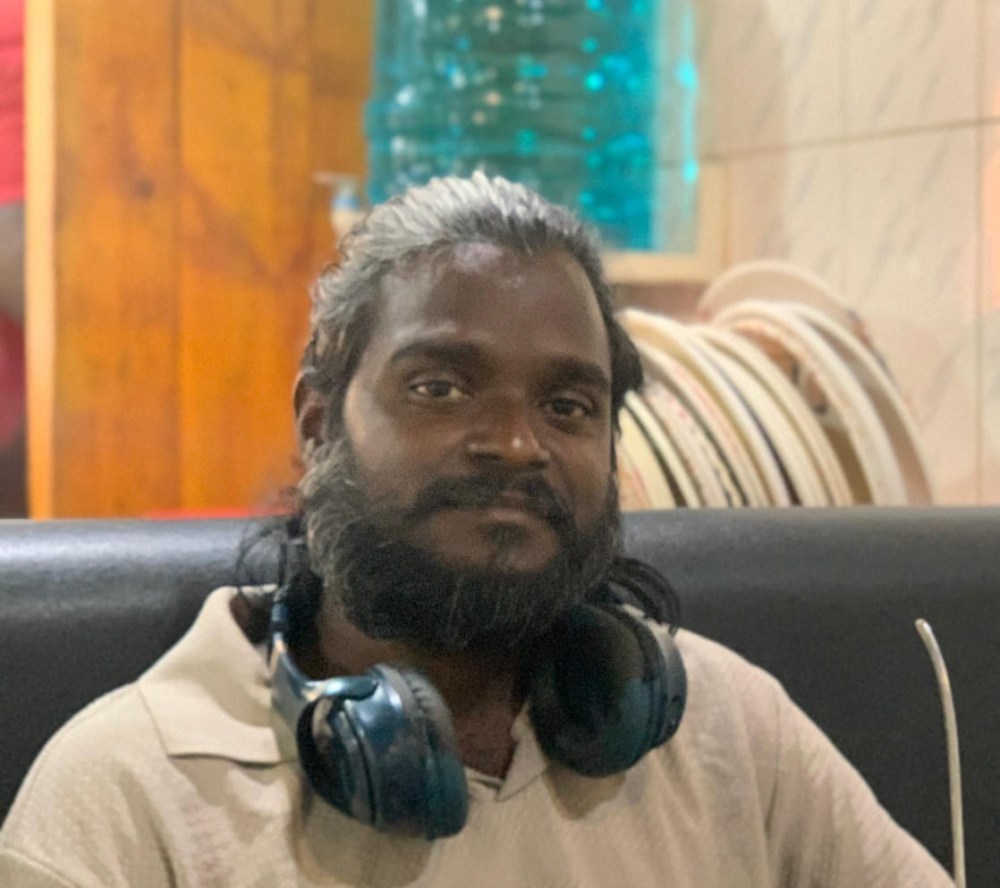

Foday coordinates our work in Sierra Leone and serves as the key bridge between the founder and local community members. He has passed the UN test and brings professional law-enforcement experience as a detective and police officer. His experience spans a wide range of cases — from a human-sacrifice investigation that resulted in a conviction, as well as other serious violent-crime work, to helping resolve domestic disputes — helping ensure our work is organized, informed, and responsive on the ground.

Marian serves as the administrator of Apostolic Christian School of Waterloo. She is a key bridge for identifying children who need targeted intervention and ensuring they get connected to the right support. Marian helps coordinate transportation and travel for children — including trips related to prosthetic fittings — and she communicates child-specific needs to Sitis Christi, such as support for amputees and essential school projects, including providing a water tap for the school of approximately 1,000 students.

Abu Bakar leads on-the-ground coordination in Waterloo by building relationships with the local amputee community and connecting individuals to support. Drawing on lived experience as an arm amputee, he documents and shares amputees' stories through photos, video, and interviews to better understand needs and advocate for care. He has long worked alongside the amputee community and serves as a liaison between Sitis Christi and the Waterloo Amputee Shelter. He also coaches a soccer team of amputees.

Sandhya has been a trusted friend and essential local contact for Sitis Christi in Pondicherry, India. Before I arrived, she helped scope out neighborhoods and identify people and families who were in need of help.
She also conducted interviews in the streets, helped us better understand local needs, and connected me with other partners who could support the work. Her local knowledge, relationships, and willingness to help have made many of our efforts in southern India possible.

Sugamar Narayanaswamy has been a helpful and steady presence during our work in India. As Sandhya's husband, he has been connected to our efforts through friendship, local knowledge, and the relationships that have helped make our visits more meaningful. While his role has been more informal than hands-on, Sugamar has helped locate resources, offered practical perspective, and helped us better understand the culture and day-to-day realities of the community.We are thankful for Sugamar's support, his connection to Sandhya's work, and the quiet ways he has helped strengthen our relationships in Pondicherry..

Avinash has been one of our most important local contacts in India. During multiple visits, he accompanied me through city neighborhoods, slums, and waste-picker colonies, helping with introductions, translation, transportation, and local guidance.
His help has made many visits, interviews, and reconnections possible, including efforts to locate people first met more than twenty years ago. I am grateful for his friendship, practical help, and the many miles we have traveled together in service of others.
Every dollar directed through these partnerships reaches someone who has no other safety net. Small amounts carry real weight.